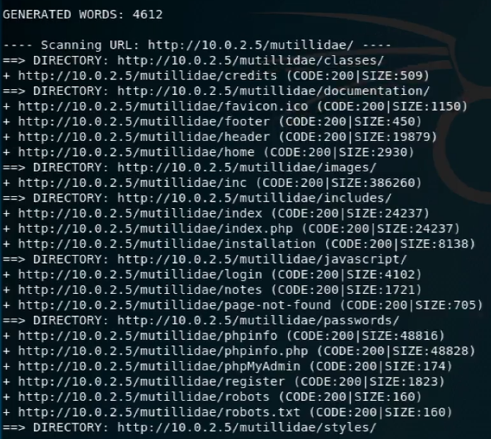

dirb framework
dirb
bir websitesi üzerinde erişilebilen dosyaları, bağlantıları ve nerede tutulduklarını gösteren çok kullanışlı bir araç
dirb Kullanımı
Linux terminalinde;
“dirb <domain name or IP address>” şeklinde girilen bir komut ile çok kolay bir şekilde tarama yapabiliriz.
dirb içinde hazırda bulunan bir keywords listesi sayesinde “admin,password,login” vs gibi anahtar kelimeleri bu siteler üzerinde aratıp bize bu dosyaların nerede olduklarını gösteriyor.
Bir dirb tarama sonucu örneği;

işte bu şekilde tarama sonrası “admin,password,login” kelimeleriyle ilişkili dosyaları bu şekilde dosyaların bulundukları konum ile birlikte bize gösteriyor.